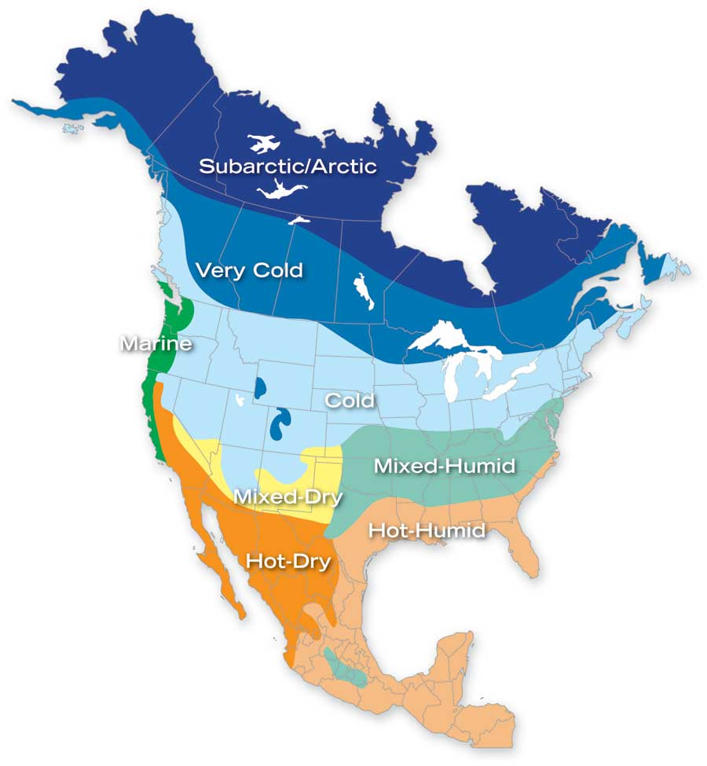

You Can Build This Energy-Efficient Solar Home
This new Solar Prairie Home can cost 75 percent less to heat than a similar conventional home.
By Nathan Kipnis
August/September 2009
Not so long ago, the best home designs in the United States were based on their local climate, crafted from materials that were nearby, and utilized time-tested building techniques. As a result, different areas of the country were known for their distinctive, regional homes.
But after World War II, cheap energy changed all that. Newly developed energy-intensive heating and cooling systems allowed designers to ignore the climate. The “International Style” of the 1950s embraced this approach: Building styles could be the same from Miami, Fla., to Wasilla, Alaska, without regard for the climate.
Of course, this way of designing is not sustainable. As energy costs rise and we make stronger efforts to reduce global warming, regionally based architecture is experiencing a renaissance. Regional designs allow homes to be efficient, more environmentally friendly and comfortable. This Solar Prairie Home, commissioned by Mother Earth News, is just such a design.
The traditional prairie home style has its roots in the Midwest and is easily recognized by the linear horizontal design, roof overhangs and centrally located fireplaces. This design is optimized for its climate and will perform best in the “cold” areas of the United States shown on the map in the image gallery.
One key ideal of a green home is to keep it appropriately sized. At about 2,600 square feet, this design’s efficient floor plan is convenient and feels spacious while minimizing the heated space and amount of construction materials.
With the specifications outlined below in “Slash Your Heating Bills in Half!,” this home can perform at least 50 percent better than a standard new home. These impressive energy savings come from a superinsulated shell and high-performance windows, together with optimum passive solar design and natural ventilation. Add solar thermal panels and you can cut the heating bill by a total of 75 percent!
Common-sense Design Features
The layout of the home relies on common-sense considerations of various energy aspects. For example, the kitchen is located at the northeast corner of the house - usually the coldest spot. Because the kitchen appliances produce heat, the location of the kitchen balances with the warmer rooms on the south side of the house. East-facing windows in the kitchen capture early morning light.
The family room is on the western side of the first floor. That room could heat up quickly with the setting sun shining in through the windows. So, there’s a covered porch on the west side to provide shade, as well as a convenient outdoor living space for when the weather is mild.
The long side of the house has extra-large windows and faces south, which allows heat from the low winter sun to enter. “I bet it’s a hot box in summer,” you might say. Nope, roof overhangs and awnings prevent the higher summer sun from shining in those south-facing windows. The Solar Prairie Home’s orientation and layout take advantage of the position of the sun year-round. The “living” areas of the house benefit from solar gain from the south, while the auxiliary/utility spaces are along the north. To view a nifty animation showing how the sun strikes this home throughout the year, watch the Solar Prairie Home in March, June and December.
A high-efficiency fireplace can be included in the middle of the house. It makes a nice visual centerpiece for the family room and can heat most of the home in warmer parts of the “cold” region. Plus, if you install a masonry chimney, it will function as a thermal mass flywheel, helping to keep the home warmer in winter and cooler in early summer. (Thermal mass helps moderate heat whether there is direct sun on it or not. A home with lots of thermal mass tempers the thermal swings throughout the day and night.)
The upper floor has three bedrooms, including a master bedroom suite. The neatest cost-saving feature is the single bathroom that works like two full bathrooms. With two private lavatories separated by sliding doors from the middle area with the toilet and shower spaces, the bathroom uses space and resources efficiently, saving at least $5,000 in construction costs versus having two separate bathrooms.
The second floor laundry room includes a window, so a clothesline on pulleys out to a pole or tree would allow you to hang laundry through the window!
Efficient Heating and Cooling Systems
Because this design is for cooler regions and because air conditioning is such an energy hog, it’s not included as part of the recommended base mechanical system. Naturally cooled from cross ventilation, shading from overhangs, and ceiling fans, the house should be comfortable in summer in most locations where its design is appropriate.
As part of the passive solar design features, most of the first floor is an insulated concrete slab, which provides thermal mass to absorb and store heat from the sun. For the best solar performance, the main floor should be dark stained concrete (or dark tile). Because of the solar gain through the large south-facing windows, the insulated 4-inch-thick concrete floor slab absorbs heat coming into the space and prevents overheating during the hours of strongest sunlight.
Depending on your preferences and climate, there are several heating options. Energy analysis indicates the most efficient heating option likely would be a hydronic radiant heat system and a natural gas boiler.
If you want air conditioning, a forced-air radiant floor system would be a possibility (visit Airfloor.com for more details on this type of system). If the home is located where the temperature does not get so low that the concrete floor would be too cold in the winter, a “standard” forced-air heating and air conditioning system would likely be the least expensive option that includes air-cooling.
The fireplace should not be a traditional, drafty fireplace without doors. Efficient, modern fireplace options include a fireplace insert, a free-standing stove, a high-mass “Russian” fireplace or a fireplace that functions with a forced-air system.
Whatever heating and cooling equipment you choose can be smaller and less expensive than in a conventional home, thanks to this super-efficient design. These savings help cover costs of greater insulation and better windows so that a super-efficient home does not have to cost more overall to build.
Solar thermal and photovoltaic (PV) panels can easily be included when the house is built, or added later. Solar thermal panels could accommodate most hot water needs, and can assist the heating system. The solar panels can be mounted on the ground for ease of cleaning, or mounted on the roof. Even if solar panels are not used initially, the home can be inexpensively pre-wired or pre-plumbed for future installation.
Using Materials Wisely
Framing spacing is wider (19.2 inches) than standard construction to reduce wood use. The outside walls use 2-by-6 framing to increase the amount of space available for insulation. As this level of insulation will allow little outside air to enter the home, a controlled fresh-air intake system must be used. When the house is in heating mode (or cooling mode if a central air conditioner is used), this system takes the conditioned inside air and transfers some of the energy from that stale air to the incoming fresh air from outside. By doing this, the incoming air is “preheated” or “precooled” to save energy.
Because plywood sheets are 4-feet-by-8-feet, the length of exterior walls are multiples of 2 feet to reduce cutting and minimize waste. Open web trusses for the floor system allow easy access for any required ductwork, conduit and piping.
Durable fiber-cement siding and trim (see Install Fiber-cement Siding: Don’t Paint Your House for 25 Years!) and fiberglass-clad high-efficiency windows (read High-performance Windows) keep maintenance to a minimum. The windows are double-glazed, argon-filled units with wood frames covered in fiberglass. Because fiberglass and glass are the same material, no gaps are created between the glazing and the frame due to expansion/contraction during temperature extremes.
The best options for flooring are stained concrete, locally sourced wood, stone or ceramic tile. Dark colors will absorb more solar heat. (But in areas where sunlight doesn’t hit the tile directly, light colors are fine.) Some of the best tile options are made from recycled materials (see Eco-friendly Recycled Tile). Wall-to-wall carpet isn’t recommended because of its short life expectancy and tendency to hold dust and dust mites. Area rugs can be used to define rooms without the problems associated with carpet.
Adhesives and paint with low or no volatile organic compounds (VOC) will provide better indoor air quality. Any composite wood materials, such as particle board, used for shelving and cabinetry should utilize nontoxic glues.
For more on alternative home heating options, visit the Passive Solar Home Design page.
Certified Super-efficient Homes: A Catalog of Plans Is on the Way!
With this article, we are pleased to launch the Mother Earth News Super-efficient Home Plans. We are partnering with our ever-elegant, always-green sister magazine, Natural Home, and inviting leading architects to offer you region-specific home plans that are certified to be 50 percent more energy-efficient than typical building code requirements. Each design will be analyzed using EnergyPlus software to assure it will meet that goal.
So, what does this mean for your bottom line? You can save big three ways if you build a home using one of our designs.
- First, all designs use materials efficiently to keep construction costs as low as possible.
- Second, the homes’ energy-efficient features and solar heating options will save you anywhere from 50 to 75 percent every year on heating costs. You’ll save even more if you opt to rely on the natural cooling features.
- And finally, if you decide to build one of the super-efficient designs, you will easily save $10,000 to $20,000 or more in architects’ fees. Blueprints for the homes will be available for only $2,000 to $3,000 - a fraction of what you would have to pay for a custom design. (And yes, you can have the architect make changes to the plans to adapt the design to your site or circumstances.)
Here is the first design, a 2,600-square-foot, two-story prairie home by award-winning green architect Nathan Kipnis. Next up, later this year, will be a farmhouse by Solar Pioneer award winner David Wright of Grass Valley, Calif. We plan to add several new designs - or maybe more - each year, building a catalog offering a wide range of styles and sizes.
- MOTHER
Slash Your Heating Bills in Half!
The Solar Prairie Home, if located in the Great Lakes region, will require only about $600 per year to heat, which is about half as much as a typical new home, according to analysis by Melas Energy Engineering. To make the Solar Prairie Home 50 percent more energy efficient than a standard new home, it should have a radiant floor heating system (92 percent efficient natural gas boiler, no ductwork and added thermal mass upstairs) along with the following insulation and windows:
- 6-inch walls (studs 19.2 inches on center) with blown-in insulation plus 2-inch polyisocyanurate (R-6/inch) rigid exterior insulation
- R-49 insulation in the roof
- Insulated slab-on-grade; R-30 insulation under raised floor areas
- Non-metal windows with low-e coating (U-factor=0.34, SHGC=0.36)
- Radiant barrier in attic (helps to keep house cooler in summer)
- High-quality insulation installation, third party verified
If you want to save even more on energy bills, an active solar water system could provide domestic hot water and supplement the space heating. Chris Miller, mechanical engineer at Melas Engineering, says, “The Prairie Solar Home reduces energy use by half via passive solar and energy conservation methods. Of the remaining energy load, 30 to 50 percent could be provided by solar energy. Our analysis indicates that by incorporating all these features, the Prairie Solar Home would use only 25 to 35 percent of the space-heating energy that a standard new home would require.”
Build the Solar Prairie Home!
Want to learn more about this design? Our study plans package will give you a closer look at the Solar Prairie Home created for Mother Earth News by Nathan Kipnis Architects. The study plans provide detailed information on this copyrighted home design, including:
- Elevation Drawings
- Floor Plans
- Descriptions of Design Features
The kit explains how to order construction blueprints (which can be modified to your liking) when you’re ready to build.
The package is just $14.99. To order, call 800-234-3368 and ask for item No. 4221, or visit www.MotherEarthNews.com/shopping.
Nathan Kipnis is principal of Nathan Kipnis Architects Inc. of Chicago. The firm specializes in environmentally responsive designs for residential and commercial buildings. Learn more at nk-greenplans.com.
 NATHAN KIPNIS Regional designs, such as the Solar Prairie Home, allow homes to be efficient, more environmentally friendly and comfortable. |
NATHAN KIPNIS The porch on the west side shades the family room from summer sun and creates an outdoor living area. |
 BUILDINGSCIENCE.COM/ NATE SKOW The Solar Prairie Home is designed for the “cold” region of the United States |
|
NATHAN KIPNIS To save on annual heating costs, the design features a superinsulated shell and high-performance windows. |
NATHAN KIPNIS The unique design of the upstairs bathroom in this solar home saves about $5,000 in construction costs versus having two separate bathrooms. Want more space in the bedrooms? Consider built-in fold-down beds. |
|